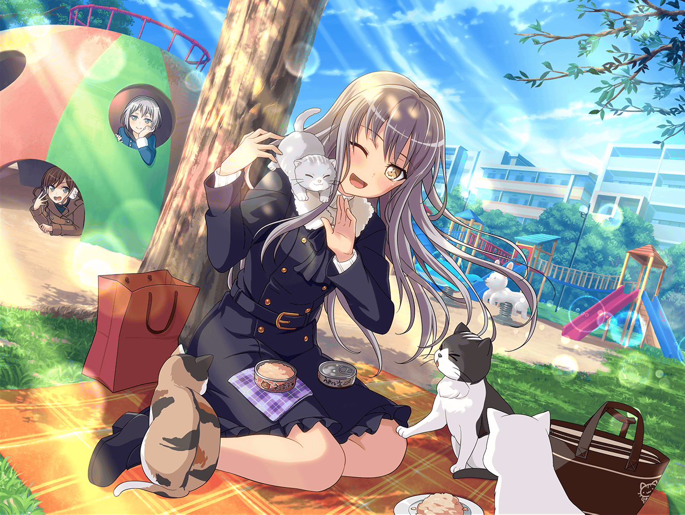

公園
モカ
有咲の手作りチョコも無事見つかったしー、
あたしも帰って、限定チョコ食べよっかな～
友希那
……
モカ
あれ～？
湊さんは、まだ帰らないんですか～？
友希那
私は……ちょっと、取り込み中、だから……
モカ
取り込み中～？
……あ、猫か
友希那
え、ええ……
猫用のおやつなんて、
家に持ち帰っても邪魔になるだけでしょう？
友希那
だから、ここであげてから帰ろうと思って……
モカ
確かにそうですね～。
じゃあ、あたしも猫が食べるのを見てから、
帰ろうかなぁ～
友希那
えっ……
青葉さんも……残るの？
友希那
か、帰った方がいいんじゃないかしら？
別に見ていて、面白いものではないと思うから……
モカ
いやいや、面白いですよー。
猫にご飯をあげるとこ見てるの
友希那
……少し、ひっかかりのある言い方だけど……
好きにするといいわ
モカ
そうさせていただきますー
友希那
ほら、みんなおいで……
モカ
お～、これでもかって言うくらい、猫が寄ってきましたよ～。
みんなよく食べてますね～
友希那
たくさんあるから、慌てなくても大丈夫よ……うふふ
モカ
（湊さん、猫に囲まれて、嬉しそうな顔してるな～。
湊さんが猫好きなのは、リサさんに聞いてたけど……
ちょっと、予想以上かもなー）
友希那
あ……青葉さん……？
どうして、私の顔をそんなに見てくるのかしら？
モカ
別にー？
てゆーかー、湊さんってそんなに猫、好きなんですか？
友希那
……っ！？
わ、わ、わけのわからないことを言わないでくれる？
友希那
さっきも言ったけど……
猫に対して特別な感情なんて、持っていないわ
モカ
へぇ～、そうなんですかー
友希那
も、もちろんよ。
私は、早くこれをあげて、帰ろうと思っているから
モカ
え～？
猫達と遊んであげればいいじゃないですか～
猫
にゃ～～～～ん♪
友希那
……！？
モカ
あはは～、なんか、湊さんに完全に懐いてますね～。
遊んでほしそうな目、してますよ〜？
友希那
や、やめてちょうだい……
尻尾を立てて、すり寄って……こないで……
モカ
も～、甘えまくりって感じじゃないですか～。
遊んであげればいいのに～
友希那
あ、甘えられたって困るわね……
私は、これから……
モカ
お、別の猫が来ましたよ～。
……ん～？ 湊さんの前で寝っ転がってる。
カワイイ〜♪
友希那
……！？
モカ
おなか、見せてくれてますね？ 猫
友希那
（こ、これは猫の……信頼の証……っ！）
友希那
（時々、この公園には来ていたけど……
ここまで懐いてもらったのは、初めてだわ……）
猫
にゃっ〜♪
友希那
（か、かわいい……
どうしよう……すっごく……撫でたいっ……）
モカ
あの～、湊さん？
友希那
……あ、は、はい？
な、何かしら……？
モカ
猫も遊んでほしそうにしてるんでー、
遊んであげたらどうですか～？
友希那
……そ、そうね。
青葉さんがそう言うなら、遊んであげても構わないわ……
友希那
よしよし……
猫
にゃにゃっ♪
友希那
……はうっ
猫
にゃ～～ん♪
友希那
……はっ
猫
にゃにゃ～～ん♪
モカ
……ふふ
モカ
（湊さん……猫好きがダダ漏れですよ〜……
これはさすがに、みんなには
内緒にしといたほうがいいかな〜？）